Week09: Residual Spatial Autocorrelation Test with Moran’s I
1 Outline
- What is spatial autocorrelation
- Definition of the link matrix
- Why autocorrelation in regression residuals?
- Motivating example: Italian Fertility
- General structure of test statistic and its distribution
- Simplifications under the assumption of spatial independence
- Maximum likelihood estimation
- Specification as a FGLS model
- Serial autocorrelation
2 What is Spatial Autocorrelation
The concept of an internal spatial relationship (order) is trickier than in the time-series situation, where the order comes naturally, that is, the future depends on the present which in turn depends on the past.
In spatial analysis, the relationships among the observations are [a] multidirectional, [b] multilateral and [c] usually not equally spaced.
There are also more observations at the edge of the study area and factors like spatial extend of the regions and underlying spatial heterogeneity of the spatial objects become important.
Geo-information sciences provide many concepts of spatial relationships within a single variable. For instance:
- simple inter-object distances between point objects or representative centroids of areas
- neighborhood relationships between areas (rook’s or queen’s specification in square tessellations, higher order neighborhood relationship of regions several neighbors apart)
- traffic flows or migration patterns
- spatial hierarchies (hub and spokes)
- other diffusion processes etc.
3 The Spatial Link Matrix
The spatial connectivity matrix operationalizes the underlying structure of the potential spatial relationships among the observations.
For potential distance relationships we have the distance matrix (known from road atlases, perhaps using spherical distances)
For potential neighborhood relationships we must use topology encoded in a binary spatial connectivity matrix \(\mathbf{B}\).
3.1 Example: Encoding a spatial tessellation as a binary connectivity matrix
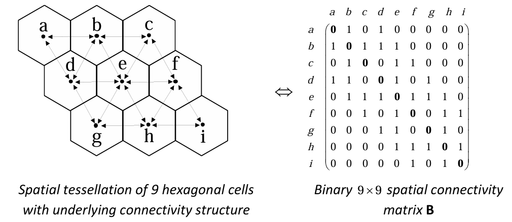
An element \(b_{ij} = 1\) denotes that the tiles i and j are adjacent and an element \(b_{ij} = 0\) signifies that the tiles i and j are not common neighbors.
The spatial connectivity matrix \(\mathbf{B}\) is symmetric.
A tile is not connected to itself. Thus, all diagonal elements are zero
For study areas with a large number n of individual regions the generation of the connectivity matrix \(\mathbf{B}\) (or distance matrix) must be left to a GIS program. The connectivity matrix has \(n \times n\) elements.
Problems occur if we have island and holes in our study area. Usually machine generated connectivity matrices must be polished manually.
Most of the elements are zero. There are efficient storage modes for sparse matrices. For empirical map patterns an area in the interior has on average 6 neighbors.
The binary spatial link matrix \(\mathbf{B}\) is usually coded: For instance, if each row is divided by its row sum we get the row-sum standardized link matrix \(\mathbf{V} = diag(\underbrace{\mathbf{B} \cdot \mathbf{1}}_{row-sum})^{-1} \cdot \mathbf{B}\).
Each row of \(\mathbf{V}\) sums to one and the overall sum over all elements of \(\mathbf{V}\) is \(n\).
Other coding scheme are possible and they follow the generic equations:
\[\mathbf{V} = \frac{n}{\underbrace{\mathbf{1}^T \cdot diag(\mathbf{d}^q) \cdot \mathbf{B} \cdot \mathbf{1}}_{sum\ of\ transformed\ component\ values}} \cdot diag(\mathbf{d}^q) \cdot \mathbf{B} \quad \text{with} \quad \mathbf{d} = \mathbf{B} \cdot \mathbf{1}\]
For the row sum standardized coding scheme the transformation parameter is \(q = -1\).
- Spatial econometrics prefers the row-sum standardized coding scheme and denotes the standardized link matrix by \(\mathbf{W}\). In contrast, geo-statistics usually works with standardized interpoint distance matrices.
4 Why autocorrelation in regression residuals?
Regression residuals \(\mathbf{e}\) capture the unexplained part of the regression model
They are usually assumed to relate to population disturbances that are \(\boldsymbol{\varepsilon} \sim N(\mathbf{0}, \sigma^2 \cdot \mathbf{I})\)
Whereas the residual are distributed as \(\mathbf{e} \sim N(\mathbf{0}, \sigma^2 \cdot \mathbf{M})\) with \(\mathbf{M} = \mathbf{I} - \mathbf{X} \cdot (\mathbf{X}^T \cdot \mathbf{X})^{-1} \cdot \mathbf{X}^T\) where \(\mathbf{X}\) is the matrix of independent variables including the intercept constant vector \(\mathbf{1}\).
(1) Misspecification Rational: if we are missing relevant variables in \(\mathbf{X}\) that exhibit a spatial pattern, their spatial pattern will spill over into the regression residuals \(\mathbf{e}\).
(2) Spatial Process Rational: The spatial objects exhibit some spatial exchange relationships, e.g.,
- interaction flows,
- competition effects or
- agglomerative advantages
then they will become spatially autocorrelated.
These exchange relationships cannot be captured by the regression matrix \(\mathbf{X}\) but manifest in a covariance matrix \(\boldsymbol{\Omega}(\rho)\) with \(\boldsymbol{\varepsilon} \sim N(\mathbf{0}, \sigma^2 \cdot \boldsymbol{\Omega}(\rho))\)
where \(\rho\) is the autocorrelation level and measuring the strength of the spatial process. For
\[\rho = \begin{cases} > 0 & \text{postive autocorrelation} \\ 0 & \text{spatial independence} \\ < 0 & \text{negative autocorrelation} \end{cases}\]
Moran’s \(I\) is tailored to work best for Gaussian spatial processes with
\[\boldsymbol{\Omega}(\rho) = \begin{cases} \text{simultaneous autoregressive spatial process} \\ \text{conditional autoregressive spatial process} \\ \text{moving average spatial process} \end{cases}\]
All these processes dependent on the coded spatial link matrix \(\mathbf{V}\) among the spatial objects, which reflects the spatial relationships and that is derived from the binary links \(\mathbf{B}\).
(3) Spatial Aggregation Rational: If areal objects are split into parts and these split parts are merged with adjacent areal objects then these aggregated objects share parts of the information that they inherited from the split objects.
This induces spatial autocorrelation among adjacent spatial objects.
Implication: One needs to get the spatial scale of analysis right.
5 Motivating Example: Fertility in Italy
- Several spatial link matrices are conceivable:
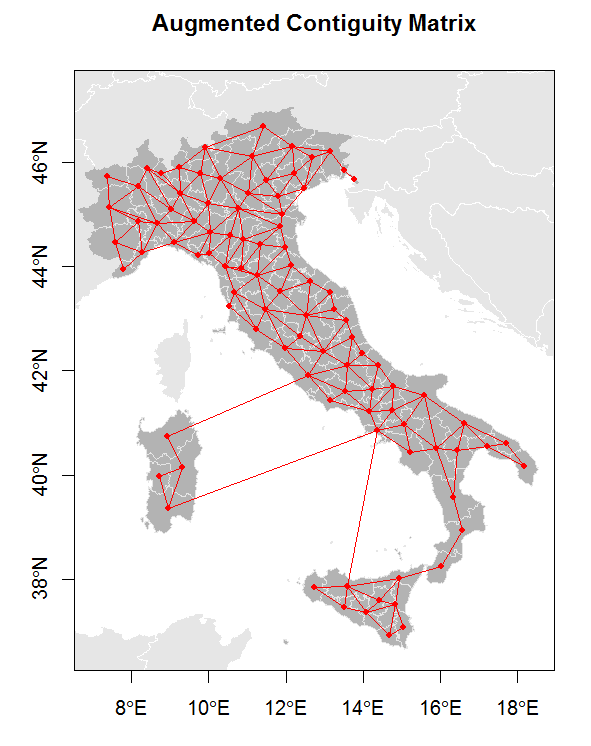
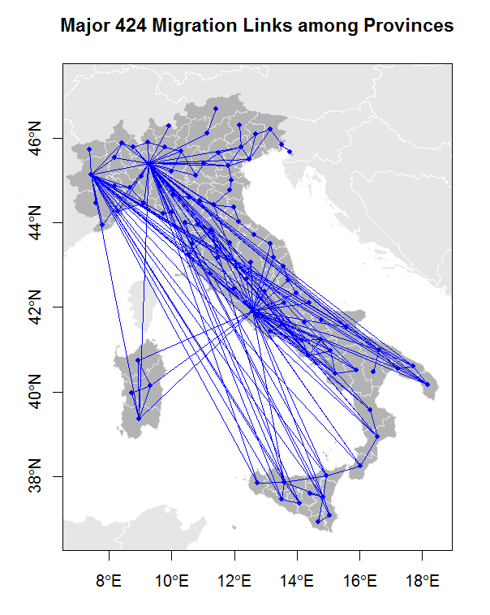
The spatial relationships can be captured in the spatial link matrix \(\mathbf{V}\)
The map pattern of the observed dependent variable Total Period Fertility and the autocorrelation of the regression residuals around the mean is \(e_i = y_i - \bar{y}\):
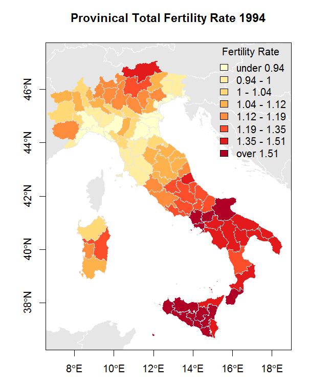
Global Moran’s I for regression residuals
model: lm(formula = TOTFERTRAT ~ 1, data = prov.df)
weights: nb2listw(prov.nb, style = "S")
Moran I statistic standard deviate = 12.7804, p-value < 2.2e-16
alternative hypothesis: greater
sample estimates:
Observed Moran's I Expectation Variance
0.853201213 -0.010638298 0.004568551- The applied regression model to explain the Total Fertility Rate is
lm(formula = TOTFERTRAT ~ FEMMARAGE9 + DIVORCERAT + log(ILLITERRAT) +
TELEPERFAM, data = prov.df)
Residuals:
Min 1Q Median 3Q Max
-0.19958 -0.05474 -0.01284 0.05272 0.42922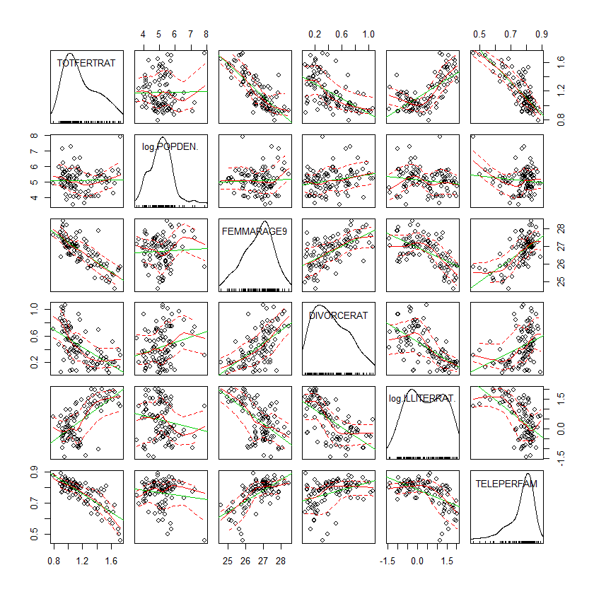
Coefficients:
Estimate Std. Error t value Pr(>|t|)
(Intercept) 4.78139 0.48606 9.837 6.23e-16 ***
FEMMARAGE9 -0.09647 0.02050 -4.706 9.11e-06 ***
DIVORCERAT -0.11839 0.05772 -2.051 0.0431 *
log(ILLITERRAT) 0.03072 0.01707 1.799 0.0753 .
TELEPERFAM -1.28499 0.18078 -7.108 2.69e-10 ***
---
Signif. codes: 0 '***' 0.001 '**' 0.01 '*' 0.05 '.' 0.1 ' ' 1
Residual standard error: 0.1047 on 90 degrees of freedom
Multiple R-squared: 0.8051, Adjusted R-squared: 0.7965
F-statistic: 92.96 on 4 and 90 DF, p-value: < 2.2e-16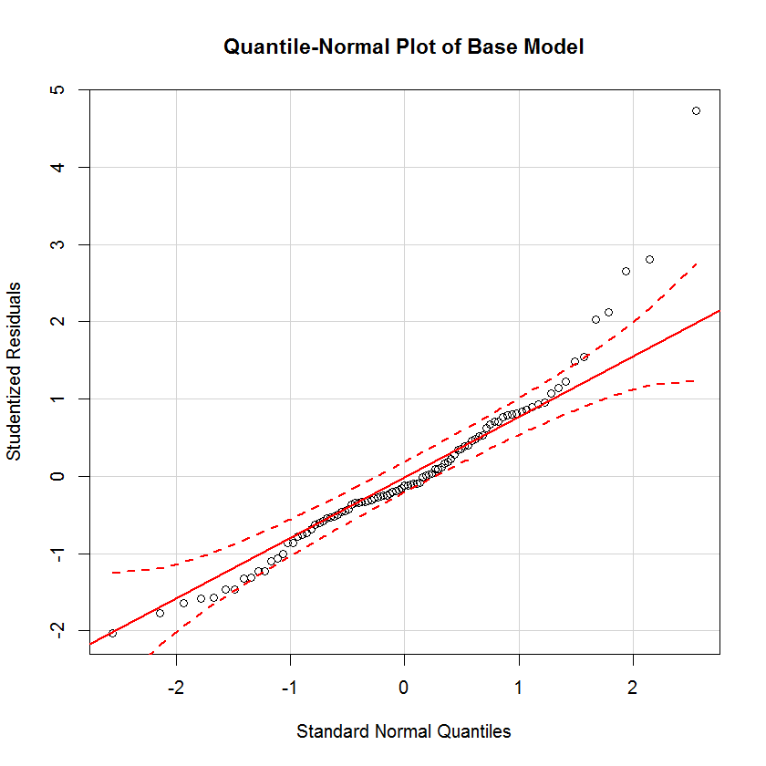
- The map pattern of the residuals \(e_i = y_i - \hat{y}_i\) and their autocorrelation level are
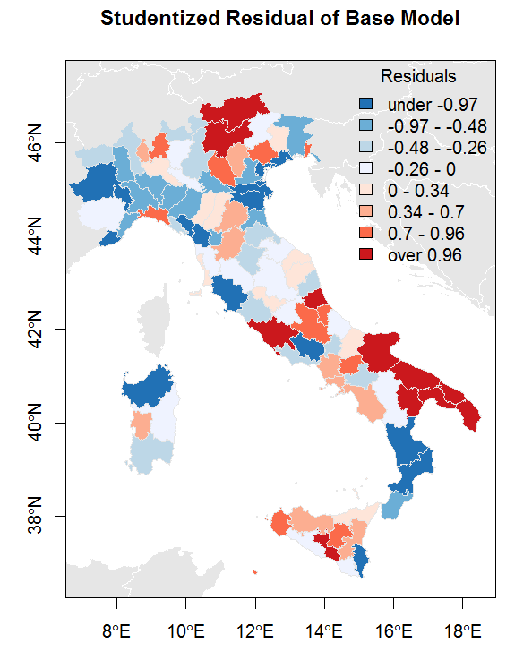
Global Moran’s I for regression residuals
model: lm(formula = TOTFERTRAT ~ FEMMARAGE9 +
DIVORCERAT + log(ILLITERRAT) + TELEPERFAM, data = prov.df)
weights: nb2listw(prov.nb, style = "S")
Moran I statistic standard deviate = 4.7288, p-value =1.129e-06
alternative hypothesis: greater
sample estimates:
Observed Moran's I Expectation Variance
0.276027992 -0.032044882 0.004244308Comments:
- Accounting for the exogenous variables has substantially reduced the autocorrelation level (\(\Rightarrow\) misspecification perspective).
- The expectation and variance of Moran’s \(I\) dependent on the regression matrix \(\mathbf{X}\).
- Residuals are best mapped by a bipolar map theme.
Most extreme possible spatial map patterns and their autocorrelation levels
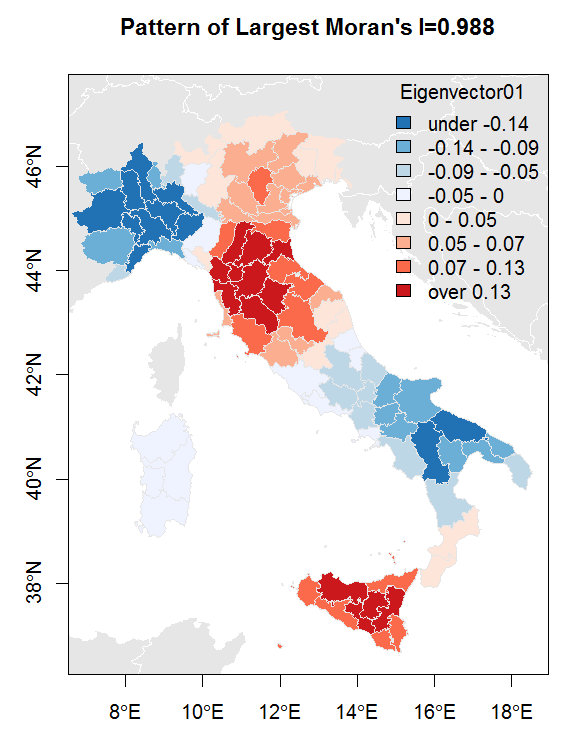
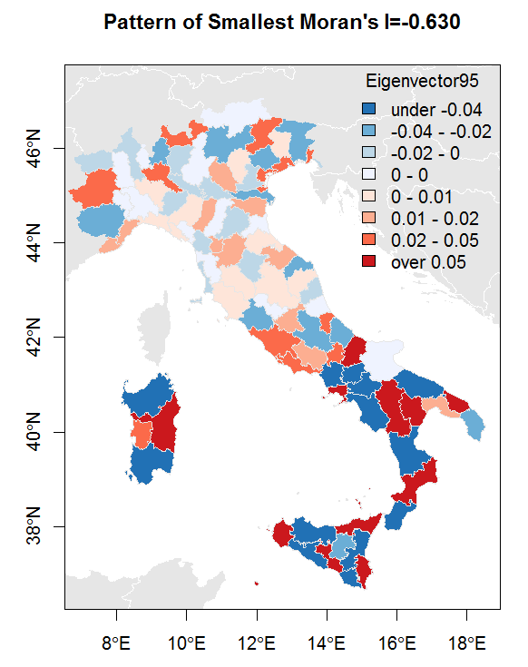
6 General structure of the test statistic and its distribution
6.1 The observed value of Moran’s \(I\)
- Moran’s \(I\) is defined to measure the strength of spatial autocorrelation in regression residuals \(\mathbf{e} = \mathbf{M} \cdot \mathbf{y}\) with
\[\mathbf{e} = \begin{cases} \mathbf{y} - \mathbf{1} \cdot \bar{y} & \text{if } [\mathbf{I} - \mathbf{1} \cdot (\mathbf{1}^T \cdot \mathbf{1})^{-1} \cdot \mathbf{1}^T] \cdot \mathbf{y} \\ \mathbf{y} - \hat{\mathbf{y}} & \text{if } [\mathbf{I} - \mathbf{X} \cdot (\mathbf{X}^T \cdot \mathbf{X})^{-1} \cdot \mathbf{X}^T] \cdot \mathbf{y} \end{cases}\]
- Its observed value \(I_{obs}\) has the formal structure of a ratio of quadratic forms in the random variable \(\mathbf{y}\)
\[I_{obs} = \frac{\mathbf{y}^T \cdot \mathbf{M} \cdot \frac{1}{2} \cdot (\mathbf{V} + \mathbf{V}^T) \cdot \mathbf{M} \cdot \mathbf{y}}{\mathbf{y}^T \cdot \mathbf{M} \cdot \mathbf{y}} = \frac{\mathbf{e}^T \cdot \frac{1}{2} \cdot (\mathbf{V} + \mathbf{V}^T) \cdot \mathbf{e}}{\mathbf{e}^T \cdot \mathbf{e}}\]
Besides the spatial autocorrelation pattern in the dependent random variable \(\mathbf{y}\) ─ through \(\boldsymbol{\varepsilon} \sim N(\mathbf{0}, \boldsymbol{\Omega})\) ─ the observed value of Moran’s \(I\) also depends on the exogenous variables \(\mathbf{X}\) through the projection matrix \(\mathbf{M}\) and the exogenous spatial link matrix \(\mathbf{V}\).
The spatial link matrix \(\mathbf{V}\) is symmetrized by the transformation \(\frac{1}{2} \cdot (\mathbf{V} + \mathbf{V}^T)\).
While the observed value \(I_{obs}\) is invariant under this transformation, the evaluation of its distribution requires a symmetric structure.
The largest and smallest possible values as well as their associated map patterns of Moran’s \(I\) can be determined by the largest eigenvalue \(\lambda_1\) and smallest eigenvalue \(\lambda_n\) of the matrix \(\mathbf{M} \cdot \frac{1}{2} \cdot (\mathbf{V} + \mathbf{V}^T) \cdot \mathbf{M}\) and their eigenvectors \(\mathbf{evec}_1\) and \(\mathbf{evec}_n\), respectively.
7 Test under the assumption of spatial independence
7.1 Exploratory visualization
The observed residuals \(\varepsilon_i\) can be plotted against the average values of their neighboring values \(\varepsilon_i^{avg}\) using the “Moran’s plot”.
For the row-sum standardized link matrix \(\mathbf{V}\) these averages are given by \(\boldsymbol{\varepsilon}^{avg} = \mathbf{V} \cdot \boldsymbol{\varepsilon}\).
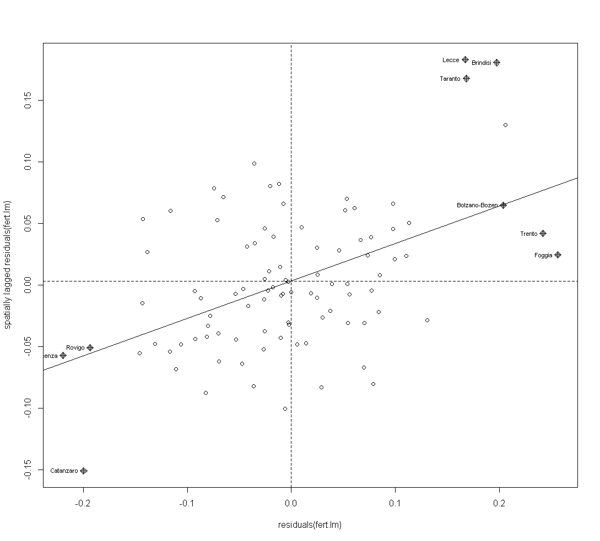
7.2 Under the assumption of \(\boldsymbol{\varepsilon} \sim N(\mathbf{0}, \sigma^2 \cdot \mathbf{I})\)
- Assuming that the population disturbances are independently identically distributed with \(\boldsymbol{\varepsilon} \sim N(\mathbf{0}, \sigma^2 \cdot \mathbf{I})\) the moments of Moran’s \(I\) can be evaluated directly through the matrix terms:
\[E(I | H_0) = \frac{tr[\mathbf{M} \cdot \mathbf{V}]}{n - K}\]
\[Var(I | H_0) = \frac{tr[\mathbf{M} \cdot \mathbf{V} \cdot \mathbf{M} \cdot \mathbf{V}^T] + tr[\mathbf{M} \cdot \mathbf{V} \cdot \mathbf{M} \cdot \mathbf{V}] + (tr[\mathbf{M} \cdot \mathbf{V}])^2}{(n - K) \cdot (n - K + 2)} - [E(I | H_0)]^2\]
- For sufficiently large number of spatial objects \(n\) and “well-behaved” link matrices \(\mathbf{V}\) one can use the normal approximation to evaluate the distribution of \(I_{obs}\):
\[\frac{I_{obs} - E(I | H_0)}{\sqrt{Var(I | H_0)}} \sim N(0, 1)\]
This expression is frequently used in software implementations.
However, those implementations frequently use incorrectly the projections matrix \(\mathbf{M}_{(1)} = \mathbf{1} \cdot (\mathbf{1}^T \cdot \mathbf{1})^{-1} \cdot \mathbf{1}^T\) rather than one based on \(\mathbf{X}\).
To evaluate the exact significance values of an observed value of Moran’s \(I_{obs}\) numerical integration or the saddle-point approximation need to be employed.
7.3 Under the assumption of \(\boldsymbol{\varepsilon} \sim N(\mathbf{0}, \sigma^2 \cdot \boldsymbol{\Omega}(\rho))\)
- Again, these conditional distribution functions \(F(I | \mathbf{X}, \boldsymbol{\Omega}(\rho))\) of Moran’s \(I\) can be evaluated by numerical integration.
7.4 Under the assumption of \(\boldsymbol{\varepsilon} \sim i.i.d\) with unknown distribution
In case the distribution of the residuals is unknown randomization needs to be employed to evaluate the significance of the observed Moran’s \(I_{obs}\).
Underlying idea:
- The spatial association of the residuals is broken up if the observed residuals are randomly assigned to different areas.
- This random assignment generates a map pattern under the assumption of spatial independence.
- This random assignment is repeated \(r\)-times.
- For each random pattern the associated Moran’s \(I_{random}\) is calculated.
- The distribution of these \(r\) random Moran’s \(I_{random}\) establishes the reference null distribution of Moran’s \(I\).
- If the observed Moran’s \(I_{obs}\) falls into a tail of this reference distribution, then the observed map pattern exhibits significant spatial autocorrelation.
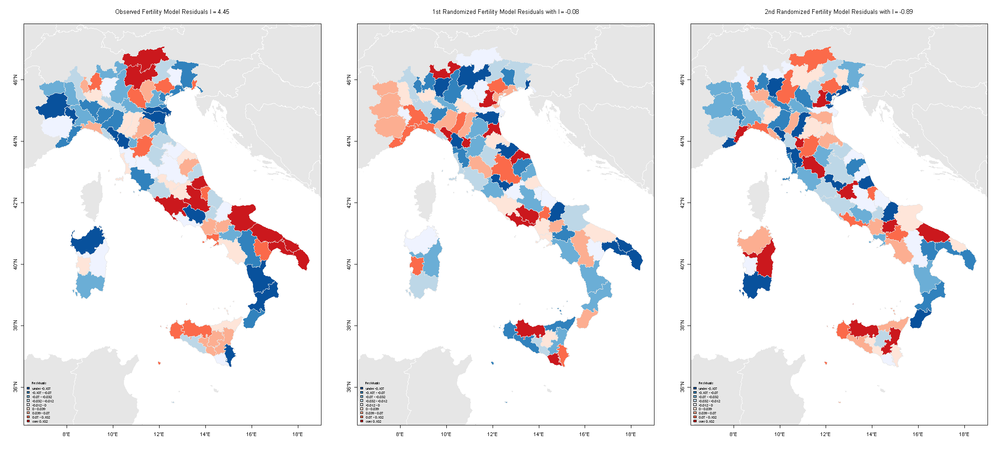
8 Modelling an Autogressive Spatial Process with FGLS
Let \(\mathbf{V}\) be the a \(n \times n\) coded spatial link matrix among the \(n\) spatial objects.
The error structure of disturbances Gaussian spatial processes becomes
\[\boldsymbol{\varepsilon} \sim N(\mathbf{0}, \sigma^2 \cdot \boldsymbol{\Omega}(\rho))\]
with
\[\boldsymbol{\Omega}_{SAR}(\rho) = (\mathbf{I} - \rho \cdot \mathbf{V})^{-1} \cdot (\mathbf{I} - \rho \cdot \mathbf{V}^T)^{-1} \quad \text{for an autoregressive process,}\]
\[\boldsymbol{\Omega}_{MA}(\rho) = (\mathbf{I} + \rho \cdot \mathbf{V}) \cdot (\mathbf{I} + \rho \cdot \mathbf{V}^T) \quad \text{for a moving average process, and}\]
\[\boldsymbol{\Omega}_{CAR}(\rho) = (\mathbf{I} - \rho \cdot \mathbf{V})^{-1} \quad \text{for a conditional autoregressive process.}\]
Notes: For the CAR process the coded link matrix \(\mathbf{V}\) needs to be symmetric.
In all processes, if \(\rho = 0\) the covariance structure reduces to the identity matrix \(\mathbf{I}\), which implies spatial independence.
For the SAR process the associated correlogram exhibits a characteristic pattern in the observed autocorrelation levels at different spatial lags (i.e., number of intermediate neighbors in between two spatial objects).
The autocorrelation level approaches an insignificant level rapidly and remains insignificant:
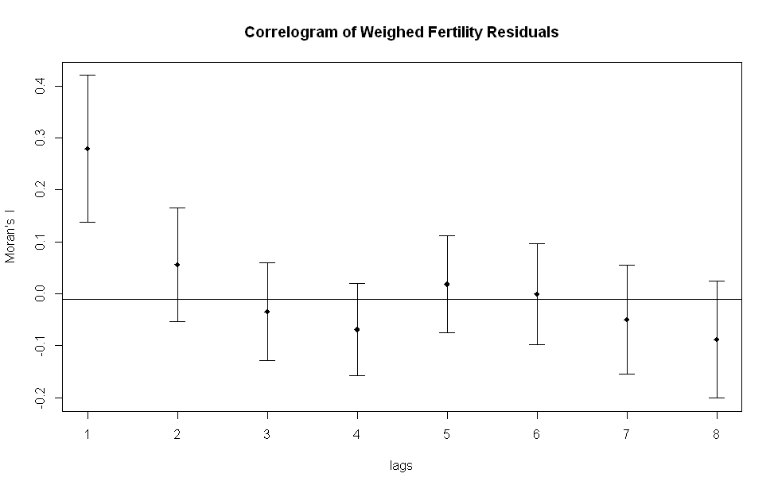
- For the AR process we get the simple transformation \(\boldsymbol{\Omega}_{SAR}(\rho)^{-\frac{1}{2}} = [\mathbf{I} - \rho \cdot \mathbf{V}]\) with
\[\boldsymbol{\eta} = \boldsymbol{\Omega}_{SAR}(\rho)^{-\frac{1}{2}} \cdot \boldsymbol{\varepsilon} \quad \text{with} \quad \boldsymbol{\eta} = \mathbf{N}(\mathbf{0}, \sigma^2 \cdot \mathbf{I})\]
- Therefore, the generalized least squares model for the AR-process becomes
\[\boldsymbol{\Omega}_{SAR}(\rho)^{-\frac{1}{2}} \cdot \mathbf{y} = \boldsymbol{\Omega}_{SAR}(\rho)^{-\frac{1}{2}} \cdot \mathbf{X} \cdot \boldsymbol{\beta} + \boldsymbol{\eta}\]
\[[\mathbf{I} - \rho \cdot \mathbf{V}] \cdot \mathbf{y} = [\mathbf{I} - \rho \cdot \mathbf{V}] \cdot \mathbf{X} \cdot \boldsymbol{\beta} + \boldsymbol{\eta}\]
\[\mathbf{y} = \rho \cdot \mathbf{V} \cdot \mathbf{y} + \mathbf{X} \cdot \boldsymbol{\beta} + \mathbf{V} \cdot \mathbf{X} \cdot \underbrace{\boldsymbol{\beta}_{SAR}}_{= -\rho \cdot \boldsymbol{\beta}} + \boldsymbol{\eta}\]
which can be feasibly estimated for the unknown parameter \(\hat{\sigma}^2\), \(\hat{\rho}\) and \(\hat{\boldsymbol{\beta}}\) with a maximum likelihood estimator.
Notes:
For this structural form of the autoregressive model the endogenous variable \(\mathbf{y}\) is on both sides of the equation.
The terms \(\mathbf{V} \cdot \mathbf{y}\) and \(\mathbf{V} \cdot \mathbf{X}\) are spatially lagged terms of the dependent and independent variables.
If \(\boldsymbol{\beta}_{SAR} = \mathbf{0}\) then the model becomes the “spatial lag” model with \(\mathbf{y} = \rho \cdot \mathbf{V} \cdot \mathbf{y} + \mathbf{X} \cdot \boldsymbol{\beta} + \boldsymbol{\eta}\).
The R-markdown document
SpatialACItaly.rmddemonstrates the estimation of a spatial autoregressive process.
9 Modelling Serial Autocorrelation with GLS (skipped, not test relevant)
- Assuming an autoregressive a stochastic process in the random component \(\varepsilon_t\) becomes
\[\varepsilon_t = \underbrace{\varphi \cdot \varepsilon_{t-1}}_{AR-process} + \mu_t \quad \text{with iid} \quad \mu_t \sim N(0, \sigma^2)\]
Underlying covariance structure \(\boldsymbol{\Omega}\) depends on the AR parameter \(\varphi\).
For instance, a process with \(|\varphi| < 1\) becomes a first order AR process.
Its underlying covariance structure for a process of an equally spaced temporal sequence of observation of length \(T\) is
\[\sigma^2 \cdot \boldsymbol{\Omega}(\varphi) = \frac{1}{1 - \varphi^2} \cdot \begin{bmatrix} 1 & \varphi & \varphi^2 & \cdots & \varphi^{T-2} & \varphi^{T-1} \\ \varphi & 1 & \varphi & \cdots & \varphi^{T-3} & \varphi^{T-2} \\ \varphi^2 & \varphi & 1 & \cdots & \varphi^{T-4} & \varphi^{T-3} \\ \vdots & \vdots & \vdots & \ddots & \vdots & \vdots \\ \varphi^{T-2} & \varphi^{T-3} & \varphi^{T-4} & \cdots & 1 & \varphi \\ \varphi^{T-1} & \varphi^{T-2} & \varphi^{T-3} & \cdots & \varphi & 1 \end{bmatrix}\]
Notice, the more time periods \(\Delta t\) two observations are apart the less their stochastic dependence becomes, because for \(|\varphi| < 1\) the autocorrelation effect \(|\varphi^{\Delta t}| < |\varphi|\) for \(\Delta t > 1\).
The inverse covariance matrix is
\[\frac{1}{\sigma^2} \cdot \boldsymbol{\Omega}(\varphi)^{-1} = \begin{bmatrix} 1 & -\varphi & 0 & \cdots & 0 & 0 \\ -\varphi & 1 & -\varphi & \cdots & 0 & 0 \\ 0 & -\varphi & 1 & \cdots & 0 & 0 \\ \vdots & \vdots & \vdots & \ddots & \vdots & \vdots \\ 0 & 0 & 0 & \cdots & 1 & -\varphi \\ 0 & 0 & 0 & \cdots & -\varphi & 1 \end{bmatrix}\]
Assuming this covariance structure \(\boldsymbol{\Omega}(\varphi)\), the unknown parameters \(\{\boldsymbol{\beta}, \sigma^2, \varphi\}\) can be estimated by maximum likelihood assume a distribution of the endogenous variable is \(\mathbf{y} \sim N(\mathbf{X} \cdot \boldsymbol{\beta}, \sigma^2 \cdot \boldsymbol{\Omega}(\varphi))\).
The R-script
GLSArmaConcord.rmddemonstrates the estimation of temporally autocorrelated stochastic processes.